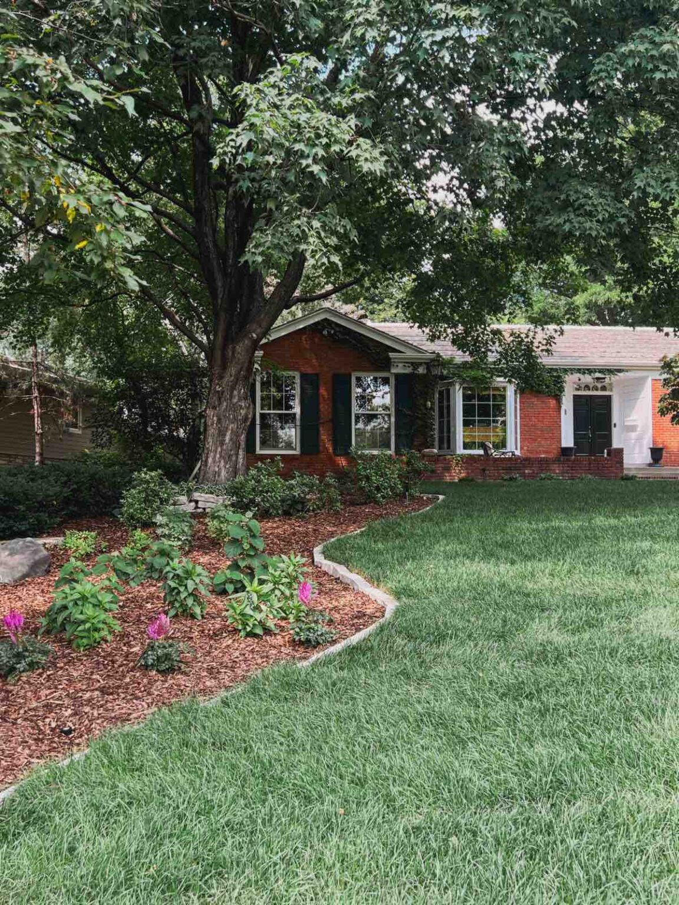

Transforming Our Outdoor Space: A Beginner’s Journey With Gardening and Landscaping
I’m so excited to share the reveal of our front yard, including before and after photos! One of the things I’ve always loved about our house is all the mature trees and shrubs in our yard. It felt like hitting the jackpot upon moving in. While I love the calming sound of the trees, the shade, and the visual variety of foliage, it’s a time and cost commitment to keep the yard looking good and staying healthy.
You might remember the saga that transpired early this spring when we realized twenty mature bushes, trees, and shrubs in the front yard died over the winter. More continued to fail in health as spring became hotter. We were incredibly disappointed to have been sold treatments by SavATree so late in the year (a morally dubious move on their behalf). Even more disappointing, they did nothing to help us deal with the massive cost we incurred from their advice and services.
The project was still massive and I needed help. I reached out to Jessie Jacobson at Tonkadale Greenhouse to see if she’d be interested in collaborating on this project. I was so excited when she not only offered to help provide the plants but also edit my wish list down to something more manageable.
Jessie honed the palette into a classic ivory and blue look with pops of tomato red. I’m so excited to see our peonies, Oriental poppies, blue salvia, and loads of hydrangeas bloom! We also planted irises (a new favorite of mine), a boxwood hedge along the front, and modern Korean feather reed grass. Haaga Rhododendron, Russian sage, and astilbe were planted too.

This loss was an opportunity to clear space (literally) and transform the front yard into something we could manage with our very beginner gardening skills. Thankfully, we had good people with a lot of experience and knowledge to help us select the right plants, remove what needed to go with care, and ultimately install something that will grow into a gorgeous front yard very soon.
Once we decided to remove the dead plants, I used plans we received last year from Landscape Love as a template. We had worked with them to design plans for a yard that felt like it belonged in the English countryside—with a bit of a coastal twist. I wanted to mix bold colors like deep indigo, tomato red, creamy yellow, and white. I also was really drawn to hydrangeas and boxwoods—that Americana look you see in Martha’s Vineyard. These plans were vast, extensive, and something we couldn’t afford to implement for a couple of years. It was decided to use a portion of this design to tackle only the garden beds this year.
A Few Takeaways When Tackling a Landscaping Project
- 1. CONSULT WITH A GARDENING/LANDSCAPING EXPERT.
- I put a lot of time and effort into our yard before this big project. Plants would die, weeds would grow back, and I’d feel more overwhelmed with our overflowing garden beds the following year. The lack of progress I made was not for a lack of work put into the space. I needed to understand how to work with outdoor spaces—how to plan for the ways they grow and change over time.
Knowing when to do what, in what season, and how the way you do it affects the growth of what you’re working with made my head spin. I had previously met Jessie when visiting Tonkadale Greenhouse for indoor plantings and holiday decorating projects. I knew they provided a ton of education and insight into not only WHAT to purchase but also HOW to plant it and care for it over time. That care and knowledge went above and beyond what I had experienced on other occasions. My point is to work with good people and ask LOTS of questions.
Tonkadale Greenhouse also has lots of resources available on their blog! This article includes expert tips for planting healthy trees and shrubs. - 2. CHOOSE LOW-MAINTENANCE PLANTS AND FLOWERS.
- Many of the inspirational images I’d saved required someone (me) who could tend to and maintain them daily. I learned that even the most “undone” looking gardens need knowledge and labor to keep them looking amazing. That’s why knowing which low-maintenance plants and flowers to use throughout my front yard was so important. This included drought-tolerant succulents, ornamental grasses, and perennials. By choosing plants that require minimal maintenance, I plan to spend more time enjoying my outdoor space than tending to it. I’ll be writing about how to prep this space for the winter season in the fall, and I’m looking forward to learning all about it!
- 3. TRUST THE VISION AND BE PATIENT.
- I am enjoying how fresh and clean our new space looks. But I am impatient to see plants grow and flowers bloom. The spacing between plants feels awkward now, but it will look like an entirely different area next year.
When I talked with Jessie about the vision for the front yard, she mentioned the joys of an ever-changing landscape. It’s a way to keep in touch with the seasons, create something the community can enjoy, and get in touch with the rhythm of nature. I see why people become avid gardeners with time, experience, and the pride that comes with tending to something you must wait to enjoy. And that’s something we don’t get the privilege to do often these days